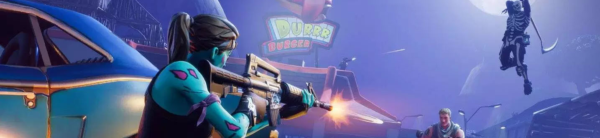
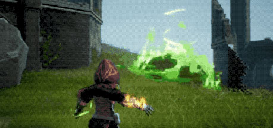

Fornite (pictured above) is a battle royale game and is by far the most popular game at the moment.
What is a battle royale game?
What is a battle royale game?
A battle royale game, also called battle royal, is a video game genre that blends the survival, exploration and scavenging elements of a survival game with last-man-standing gameplay. Battle royale games challenge a large number of players, starting with minimal equipment, to search for weapons and armor and eliminate all other opponents while avoiding being trapped outside of a shrinking "safe area", with the winner being the last competitor in the game. The name for the genre is taken from the 2000 Japanese film Battle Royale, which presents a similar theme of a last-man-standing competition in a shrinking play zone. In a Battle Royale game you mostly alone, or with a squad consisting of up to 4 players. From late 2017 to today, the Battle Royale genre has become the most popular of all, Fornite and PUBG being the most popular once, with millions of players every day.
